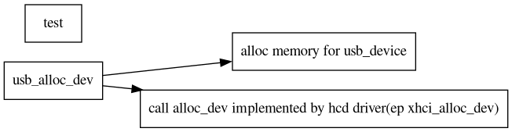

The structure of usb device
Table of Contents
1. allocate a usb device
1.1. function declarition
struct usb_device *usb_alloc_dev(struct usb_device *parent,
struct usb_bus *bus, unsigned port1)
- 输入参数：
- parent：设备连接的hub;为null时会分配一个roothub
- bus：用于访问设备的bus
- port1：从1开始的port
1.2. flow
在为 usb_device 分配内存之后，需要初始化

2. the device type
2.1. usbdevice
struct device_type usb_device_type = {
.name = "usb_device",
.release = usb_release_dev,
.uevent = usb_dev_uevent,
.devnode = usb_devnode,
#ifdef CONFIG_PM
.pm = &usb_device_pm_ops,
#endif
};
2.2. usb interface device
struct device_type usb_if_device_type = {
.name = "usb_interface",
.release = usb_release_interface,
.uevent = usb_if_uevent,
};
2.3. usb endpoint device
struct device_type usb_ep_device_type = {
.name = "usb_endpoint",
.release = ep_device_release,
};
2.4. usb port device
struct device_type usb_port_device_type = {
.name = "usb_port",
.release = usb_port_device_release,
.pm = &usb_port_pm_ops,
};